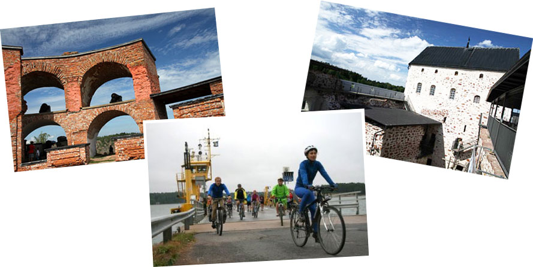
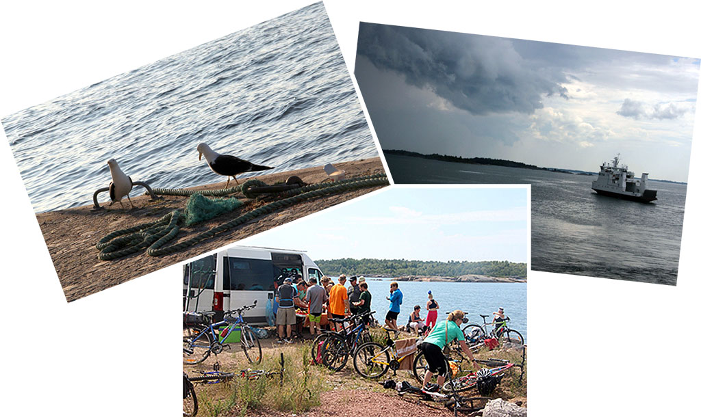
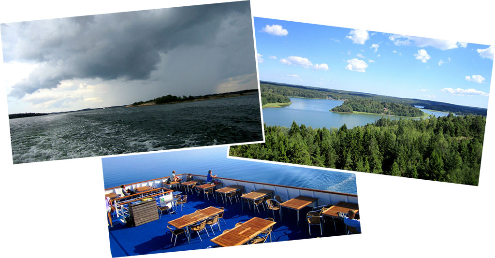

Велотур пройдет по тихим дорожкам на островах Аландского архипелага и по шведской глубинке. Между островами курсируют паромы, а некоторые острова соединены мостами, так что за время путешествия мы побываем почти на сотне островов! Дневные пробеги небольшие, что позволяет участвовать в этом походе совершенно неподготовленным людям. Средний пробег составит 40 - 45 километров в день. Самый длинный - чуть более 50 км. Это доступно каждому, кто хотя бы читал про велосипед.
Ночлеги организованы в хостелах и коттеджах. Душ есть везде, но удобства во многих местах общие. При этом чистота и опрятность неизменны. Часто к нашим услугам будет сауна, временами - даже с возможностью выпрыгнуть из нее в освежающие балтийские воды.
На маршруте будет что посмотреть и кроме природных красот: Норраталье, Мариехамн, Стокгольм, Хельсинки. Но самое впечатляющее - это удивительная и разнообразная природа архипелага: уходящие в воду скалы, полные цветов леса, обилие водоплавающих птиц и, конечно, вода повсюду: открытые морские пространства, заливы, бухточки, фьорды, проливы, шхеры…
Особенностью движения по островным дорогам является минимальное количество транспорта; время от времени проходит десяток машин с очередного парома, и дорога снова пустеет.
Паромы - это отдельный рассказ. Мы побываем на самых разных: от небольших корабликов, которые "подбросят нас" буквально на пару километров (правильнее сказать: «на пару миль», дело-то - морское!), до больших многопалубных судов со "шведским столом" и продолжительностью рейса в целую ночь.
Финал маршрута - Стокгольм, город в котором "есть что посмотреть", и "суперфинал маршрута" - паром Стокгольм - Хельсинки. Огромное многопалубное судно с ресторанами и сауной, магазинами Такс Фри и игровыми зонами.
Утром мы садимся на автобус в Петербурге и едем в Финляндию. По пути заедем на пару часов посмотреть город Турку. Вечером уже разместимся в коттеджах на берегу Балтики.
С утра мы поедем по островам, которые расположились вдоль берега Финляндии. Затем нас ждет первый морской переход на теплоходе «Вигген», Это довольно большой паром с уютным салоном, кафе и прочими благами цивилизации. Однако наше путешествие на «Виггене» недолгое - через 40 минут нам предстоит первая встреча с Аландским архипелагом: мы высадимся на Брандё - удивительно красивой цепи небольших островов. Округлые гранитные глыбы поднимаются из воды. Мягкий мох покрывает камень. Повсюду растут можжевеловые кусты, настолько густые и стройные, что напоминают искусственные украшения. С другой стороны, во многих местах из-за недостатка почвы сосны вырастают невысокими и скрюченными и напоминают сосны в заполярной тундре. Иногда дорога идет через лес, иногда нас окружает гранитное плато с редкой низкорослой растительностью.
Езда доставляет исключительное удовольствие: изумительная природа, хорошее покрытие, почти полное отсутствие людей и машин (на 1000 островах Брандё живут 525 человек). Получается по два острова на человека. На одном из них мы и заночуем в домиках, расположенных в кемпинге.

Вечером нас ждут связанные с Россией достопримечательности. Первая из них - это русская крепости Бомарсунд. Россия владела Аландскими островами с 1809 по 1917 год. Крепость была построена в начале 19 века и разрушена англо-французским флотом во время Крымской войны в 1854 году.

В этот день мы едем по Большому Аланду. Наша следующая остановка – Кастельхольм - впечатляющий замок XVII века. Рядом с ним - этнографический музей под открытым небом, сюда со всей округи свезены старые дома, амбары, ветряные и водяные мельницы, бани и т.п. Интерьер представляет жизнь Аландов в XIX веке.
К вечеру мы прибываем в столицу Аландского архипелага, город Мариехамн, основанный русскими и названный в честь императрицы.
За день мы пересечем основной Аландский остров с востока на запад. Вечером ночуем в городке Эккеро. Тут заканчиваются... старинные владения России! Да, поверить сложно, но Аландские острова были частью России, в Эккеро даже сохранилось здание старой царской таможни.

Сегодня путешествуем по континенту. Едем вдоль фьорда, по высокому Шведскому берегу. Поселки здесь крупнее и как-то богаче. А в остальном очень все похоже. Ведь как на Аландах, так и в Швеции живет один народ - шведы. Вечером мы останавливаемся в кемпинге в Норраталье. Это старинный город по своей "конструкции" напоминающий Стокгольм. С одной стороны его омывает длинный морской фьорд, с другой подходит озерно-речная система.
Покинув уютный Норраталье, уже через 30 километров мы выезжаем на берег длинного залива. Здесь мы опять садимся на паром, который доставит нас в самый центр шведской столицы – Стокгольм. Кстати сказать, самые красивые стокгольмские виды открываются именно с воды, так как фасад города обращен именно к морю. Мы заселяемся в хостел, и у нас полтора дня на отдых от велосипеда. Большой и красивый город дает другие возможности: музеи, рестораны, театры.
Стокгольм - очень красивый и своеобразный город, полный интересных достопримечательностей.
Утром мы осматриваем Стокгольм, а после обеда (17 часов) садимся на паром компании "Викинг Лайн", где нас ждут комфортабельные каюты. Идти до Хельсинки нам больше 12 часов. Хватит времени и на развлечения, и на сон.

Утром прибываем в Финскую столицу. Паром швартуется в самом центре города. У нас есть несколько часов, чтобы погулять по Сенатской площади, посмотреть на памятник Александру Третьему и - домой, в Питер. Наше путешествие подошло к концу.
NB. Данное описание - это план велопутешествия. Организаторы сохраняют за собой право на его изменение в зависимости от конкретной ситуации.
Стоимость участия в велопоходе указана на странице Календарь + стоимость Шенгенской визы и страховки.
В стоимость входит:
В стоимость не входит:
Для иллюстраций использованы фотографии Николая Савчука и Андрея Горюнова
{/block}